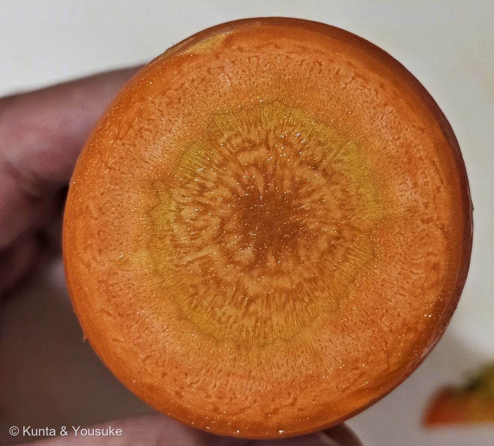
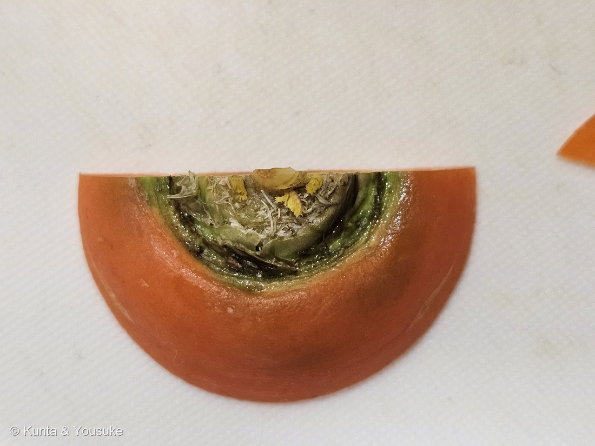
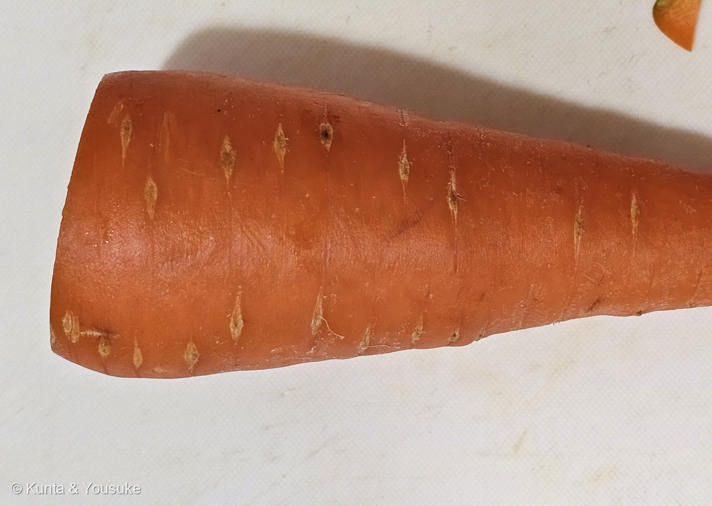
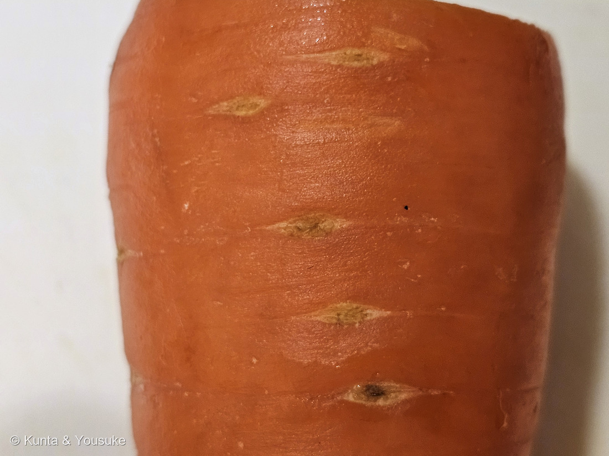
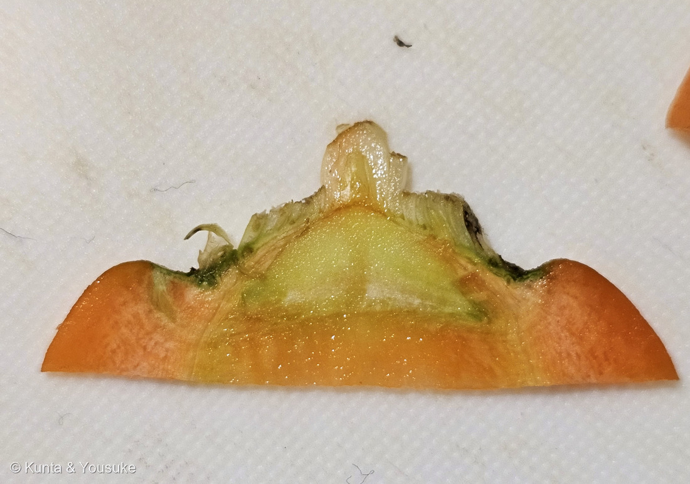

地図を読み込んでいるよ…
🔍 写真も地図も、押しているあいだ拡大して見られるよ（スマホは指を置いてすこし待ってね）。
🌍 の地図＝この子がもともと自生している場所を緑に。中央アジア。栽培されるようになったのは、イランやアフガニスタンのあたりとされる。
⭐⭐この緑は、311 タマネギとほとんど同じ場所だよ＝どちらも「原産地は中央アジア」と書かれていて、同じ晚ごはんの支度で切られた2人が、ふるさとも隣同士だった。⭐英語版Wikipediaは、栽培されるようになったのはイランのあたりとし、「いまのニンジンは10世紀ごろアフガニスタンで生まれた」と書いている＝⭐だからイランとアフガニスタンを中心に、中央アジア5か国を塗ったよ。⚠⚠⭐⭐⭐でも、この緑には大事な但し書きがいるんだ＝ここは「食べるニンジンが生まれた場所」であって、「この種がいる場所」ではない＝⭐⭐野生型のノラニンジン（同じ Daucus carota）は、ヨーロッパから西アジアまで広く自生していて、日本の河原や道ばたにも帰化している。⭐⭐⭐つまりこの子は、311 タマネギとは正反対なんだ＝タマネギは野生の姿がだれにも分からないけれど、ニンジンの野生の姿は、そのへんの道ばたに立っている。⭐そのノラニンジンは、035 フェンネルのおまけとして探しもののリストに入っているよ。
⚠ 地図は国（日本と中国だけ県・省）までしか塗れないから、ほんとうの分布より広く見えていることがあるよ。地図はだいたいの場所。正確なところは、上の文を見てね。
ニンジン（人参）
Daucus carota L. subsp. sativus (Hoffm.) Schübl. & G.Martens
別名 胡蘿蔔（こらふ）／セリニンジン／ナニンジン（⭐英名 carrot は、種小名 carota から来ているよ）
セリ科 · Apiaceae（ニンジン属 Daucus）── ⭐011 ミツバ・035 フェンネル・137 アシタバにつづくセリ科の4人目／⭐⭐図鑑が5か所で名前を呼んでいたのに、本人がいなかった子
燻太さんの言葉「宿題は、土に植わっているニンジンを撮影することだね。花を見る機会もあればうれしいよね。」── ⭐⭐その2つが、そのままこの子のいちばん大事な話につながっていたよ
⭐⭐⭐⭐⭐ 名前と学名の由来 ── この子も、名前を借りていた
- 学名は Daucus carota L. subsp. sativus。属名 Daucus はラテン語で「パースニップ」、種小名 carota は「ニンジン」の意。⭐英語の carrot は、この carota から来ているんだ。
- ⭐⭐⭐でも、和名のほうがずっと面白いよ。――本来「ニンジン（人参）」とはオタネニンジン（朝鮮人参）を指す語で、この野菜は「胡蘿蔔（こらふ）」と呼ばれた外来野菜だった。⭐「胡」は外来を示す字だよ。別名に「セリニンジン」「ナニンジン」も残っている。
- ⭐日本に来たのは16〜17世紀ごろ、中国から。⭐江戸時代の農書に「菜園に欠くべからず」とあるくらい、すぐに広まった。
- ⭐⭐⭐⭐⭐ここで、図鑑の話がつながるんだ。――309 ニンジンボクのとき、燻太さんは「名前はセリ科のニンジンからもらっているみたい」と言ってくれて、ぼくは「ちがうよ、ウコギ科のオタネニンジンだよ」と直した。
- ⭐⭐そして今日、その「セリ科のニンジン」本人が来て、分かったことがある。――⭐⭐⭐この子も、オタネニンジンから名前を借りていた。
- ⭐つまり日本語の「人参」は、まずオタネニンジンのもので、そこから2つの植物が名前を借りたんだ＝この子（セリ科・根が似ている）と、309 ニンジンボク（シソ科・葉が似ている）。⭐⭐しかも借りた側のこの子のほうが、いまでは「ニンジン」と言えばこちらを指すくらい有名になった。
- ⭐だから燻太さんの見当は、相手としては外れていたけれど、話の中心にはちゃんといたんだよ。
⭐⭐⭐⭐⭐ これは「根」だよ ── 玉ねぎとの、いちばん大きなちがい

⭐ この1枚（④）は、根の表面を大きく写したもの。白い点のひとつひとつが、細い根が出ていた場所だよ。 🔍 押しているあいだ拡大して見られるよ。
- ⭐⭐⭐出典がはっきり書いている＝「食用にしているオレンジ色のほとんどは根です（オレンジ色の一番の上の部分は胚軸）」（日本植物生理学会「みんなのひろば」）。
- ⭐そして中の並びはこう＝「外側から順に、表皮、皮層（Cortex）、内皮、内鞘、師部（Phloem）、形成層（Cambium）、木部（Xylem）」（同）。⭐写真①が、そのままこの順に写っているよ。
- ⭐いちばん外の細い縁＝表皮／⭐濃いオレンジのぶあつい部分＝皮層と師部（同「一番外側の表皮の内側に濃いオレンジ色の皮層があり、その内側にやや白っぽいオレンジ色でドーナツ状の師部」）
- ⭐⭐その内側の、くっきりした輪＝形成層（同「やや黄色っぽいリング状の形成層」）／⭐まんなかの黄色っぽい芯＝木部（同「小さい丸い粒状の構造（実際にはこれが水を運ぶ道管）を含む木部」）＝⭐写真①の芯に放射状の細い線が見えるでしょう。あれが道管のならびだよ。
- ⭐⭐⭐ここが面白いところ＝「ニンジンはダイコンと違って、木部ではなく師部の柔細胞が増えて肥大したもの」（同）。⭐つまり、ニンジンが太るのは外側なんだ。⚠だから太りすぎると外が追いつかなくて割れる＝「裂根：主根の肉部（師部）の生長が芯部の肥大に追い付かず、亀裂が発生する」（BSI生物科学研究所）。
- ⭐⭐そして、食べるときにも効いてくるよ＝「ショ糖などの元となるデンプン粒の分布を見ると皮層と師部に多く、木部には少ないようです」（日本植物生理学会）。⭐外側のほうが甘くて、芯のほうが水っぽい、ということだね。
- ⭐⭐⭐「これは根だ」と、写真だけで言えるしるしが、もうひとつあるよ。――⭐上の写真④を見て。白っぽい小さな点が、縦にきれいな列になってならんでいるでしょう。⭐⭐あれは側根（横から出る細い根）が出ていたあとなんだ。⚠茎なら、そこには葉がつく。根だから、根が出る。⭐写真③でも、その列が根の全長にわたって走っているのが分かるよ。
⭐⭐⭐⭐⭐ まんなかの、白いもの ── 玉ねぎと、まったく同じものが写っていた

⭐ この1枚（⑤）は、頭を縦に切ったところ。下から オレンジの根 → 淡い緑の短い茎 → 白い芽 の順に、三段になって見えるよ。 🔍 押しているあいだ拡大して見られるよ。
- ⭐写真②と⑤を見てほしいんだ。――オレンジの根の上に、緑色の部分があって、そのまんなかに白っぽい小さなものが立っているでしょう。
- ⭐⭐あの緑が茎だよ。――出典はこう書いている＝「茎の節間がほとんど伸長しないため、地上茎が極端に短く、葉が地中にある主根の首から放射状に直接出ている状態である」（BSI生物科学研究所）。⭐ニンジンの茎は、あの緑のところだけ。だから葉が地面からいきなり生えているように見えるんだ。
- ⭐⭐⭐そして、まんなかの白いものが芽（生長点）。⭐写真⑤では、根（オレンジ）→ 茎（緑）→ 芽（白）が、下から順に3段になって見えるよ。
- ⭐⭐⭐⭐⭐ここでぼくは、思わず声が出たんだ。――きのう登録した311 タマネギの写真④に、まったく同じものが写っていたから。
- ⭐タマネギも「短く押しつぶされた茎」の上に「中心の芽」がのっていた。⭐ニンジンも同じ。⭐⭐ちがうのは、お弁当をどこに詰めたかだけなんだ。
- ⭐タマネギ＝葉をぶあつくして、そこにためた／⭐ニンジン＝根をぶあつくして、そこにためた
- ⭐⭐同じ晩ごはんの支度で切られた2つが、植物のちがう器官だったんだね。⭐しかも18分ちがいだよ。
⭐⭐⭐⭐⭐ 1年目にためて、2年目に咲く ── 燻太さんの宿題の答え
- ⭐燻太さんの言葉＝「宿題は、土に植わっているニンジンを撮影することだね。花を見る機会もあればうれしいよね。」
- ⭐⭐⭐まず、いちばん大事な一文から。――「In the first year, energy is stored in the taproot to enable the plant to flower in its second year.」＝1年目は、2年目に花を咲かせるために、主根にエネルギーをためる（英語版Wikipedia）。
- ⭐⭐⭐⭐きのう311 タマネギで、ぼくは「あの玉は、次の春に花を咲かせるためのお弁当箱だ」と書いた。――⭐あれはぼくの言いかただったけれど、ニンジンでは出典がそのまま同じことを言っているんだ。
- ⭐ニンジンも越年草（二年生）（BSI「ニンジンはセリ科ニンジン属に属する越年草で、原産地は中央アジアである」）。⭐そして花が咲くきっかけも、タマネギと同じ冬の寒さ＝「10℃以下の低温に遭遇すると、花芽が発生しやすく、暖かくなると、抽苔して開花し、商品価値を失う恐れがある」（同）。
- ⚠「商品価値を失う」――農家さんにとって、花はこまりものなんだ。⭐だから、ふつうの畑では花が咲く前に収穫してしまう。⭐⭐燻太さんが「花を見る機会もあれば」と言ってくれたのは、そういう意味でも、なかなか会えない花だよ。
- ⭐⭐⭐⭐⭐でも、近道が書いてあった。――「種苗会社は採種用のニンジンを抽苔の前に掘り出し、選別して根の異常や生育の悪い株を取り除いてから採種圃場に再び植えつけて、抽苔・開花させる」（同）。
- ⭐⭐⭐つまり、プロも「いちど掘って、もう一度植えて」花を咲かせている。――⭐だから、切ったニンジンの頭（ヘタ）を土に置いて、そのまま冬を越させるのは、プロとまったく同じやりかたの、小さい版なんだ。
- ⭐咲いたら、見るのは複散形花序（同「茎先の花芽が伸ばして複散形花序を形成し、開花する。開花は14〜21日も続き」）＝小さな白い花の傘が、たくさん集まってひとつの大きな傘になる、セリ科の形だよ。⭐背は高くて60〜200cmにもなる（英語版Wikipedia）。
- ⭐⭐もうひとつ、種のことも面白いよ＝「ニンジンは好光性種子なので、発芽に光が必要である。播種後の覆土が厚いと、種が光を感じない場合は発芽しないので、覆土厚が1cm以内にする」（BSI）。⭐土をかぶせすぎると、芽が出ない種なんだ。
⭐⭐⭐ オレンジは、あとから来た色
- ⚠びっくりしたんだけど、ニンジンはもともとオレンジ色じゃなかった。――「In the 10th century, roots from West Asia, India and Europe were purple.」＝10世紀の西アジア・インド・ヨーロッパのニンジンは紫だった（英語版Wikipedia）。
- ⭐⭐いまのオレンジ色は、17〜18世紀にオランダの栽培家が作った（同「the orange carrot was created by Dutch growers」）。⭐つまり、あの「にんじん色」は、ここ数百年の色なんだ。
- ⭐日本にも2系統ある＝東洋系＝細長く、赤みが強く（リコピン）、においが強い／西洋系＝太く短く、オレンジ色（カロテン）、においが少ない。⭐江戸時代は東洋系が主流で、明治以降に西洋系が入った。⭐お正月の煮しめに使う「金時にんじん」が東洋系だよ。
- ⭐⭐写真の子は西洋系＝太くて短くて、オレンジ色。⚠品種までは決められないけれど、系統ははっきりしている。
- ⭐⭐⭐そして、ここでも311 タマネギと並ぶんだ。――赤タマネギの赤はアントシアニン、ニンジンのオレンジはカロテン、金時にんじんの赤はリコピン。⭐同じ日の台所に、ちがう色素が3つ来ていたことになるね。
⭐⭐⭐⭐ 図鑑は、この子の名前を何度も呼んでいた
- ⭐⭐⭐きのうの311 タマネギと、まったく同じことが起きたよ。――登録するまえに図鑑の中を調べたら、ニンジンの名前が、もう5か所で呼ばれていた。
- 011 ミツバ＝「セリ科なので、セリ・パセリ・ニンジン・セロリ・パクチーの仲間」
- 035 フェンネル＝おまけが「ノラニンジン」／本文に「ドクニンジン（ソクラテスを死なせた毒草）」
- 137 アシタバ＝「セリ科には猛毒の仲間（ドクゼリ・ドクニンジン）もいる」
- 234 カクレミノ＝「Dendropanax＝木になったチョウセンニンジン」
- 309 ニンジンボク＝名前の由来ぜんぶ
- ⭐⭐とくに309では、ぼくはこう書いていた＝「セリ科のニンジン（Daucus carota）の葉＝こちらは羽根のように細かく何回も裂ける葉」。⭐学名まで書いておいて、本人は図鑑にいなかったんだ。
- ⭐セリ科は、この子で4人目（011 ミツバ／035 フェンネル／137 アシタバ）。
- ⚠そして、まだ「ニンジンの葉」の写真は図鑑に無いんだ。⭐お店のニンジンは葉を落としてあるからね。⭐⭐だから、おまけをパセリにしたよ＝同じセリ科で、葉が主役で、いつでもお店にいる子。
⭐⭐⭐⭐⭐ 野生の姿が、道ばたにいる
- ⭐⭐⭐きのうのタマネギで、ぼくはこう書いた――「7000年育てられて、野生のタマネギがどんな草だったのかを、だれも知らない」。⭐この子は、まったく逆なんだ。
- ⭐ニンジンの野生型はノラニンジン＝学名も同じ Daucus carota で、栽培型のほうが亜種 subsp. sativus として分けられている（英語版Wikipedia「The vegetable is a domesticated form of the wild carrot」）。
- ⭐⭐そしてノラニンジンは、日本の河原や空き地や道ばたにふつうにいる。――⭐じつは図鑑では、035 フェンネルのおまけとして、ずっと前から探しもののリストに入っている子なんだよ。
- ⭐⭐⭐だから、この2つを並べると、こうなる。
- 311 タマネギ＝ふるさとに一株もいない。野生の姿は、だれも知らない
- 312 ニンジン＝野生の姿が、そのへんの道ばたに立っている
- ⭐⭐同じ中央アジア生まれで、同じ二年生で、同じ日に切られた2人なのに、ここだけがまるでちがう。⭐ノラニンジンに会えたら、それは「ニンジンの、野生のすがた」を見ることになるんだよ。
出典：和名と「人参」の由来・胡蘿蔔・学名の意味・東洋系と西洋系・渡来は日本語版Wikipedia「ニンジン」（セリ科ニンジン属の二年草／本来「ニンジン（人参）」とはオタネニンジン（朝鮮人参）を指す語であり、この野菜は「胡蘿蔔」と呼ばれた外来野菜／「胡」は外来を示す／別名 セリニンジン・ナニンジン／16〜17世紀ごろに中国から伝わった／菜園に欠くべからず／属名 Daucus はパースニップ、種小名 carota はニンジンの意／東洋系は細長く赤みが強くリコピン、西洋系は太く短くオレンジでカロテン／多肉質の根は食用にされる／春から秋に大型の複散形花序を出して、多数の小さな白い5弁花）。食用部が根であること・断面の組織の並び・師部が太ること・デンプン粒の分布は日本植物生理学会「みんなのひろば」植物Q&A「ニンジンの根のつくりについて」（食用にしているオレンジ色のほとんどは根です（オレンジ色の一番の上の部分は胚軸）／外側から順に、表皮、皮層（Cortex）、内皮、内鞘、師部（Phloem）、形成層（Cambium）、木部（Xylem）／一番外側の表皮の内側に濃いオレンジ色の皮層があり、その内側にやや白っぽいオレンジ色でドーナツ状の師部、そしてその内側にやや黄色っぽいリング状の形成層、さらにその内側に小さい丸い粒状の構造（実際にはこれが水を運ぶ道管）を含む木部／ショ糖などの元となるデンプン粒の分布を見ると皮層と師部に多く、木部には少ないようです）と同「大根と人参の導管部分について」（ニンジンはダイコンと違って、木部ではなく師部の柔細胞が増えて肥大したもの）。越年草・原産地・短い茎・低温と抽苔・複散形花序・採種のやりかた・好光性種子・裂根はBSI生物科学研究所「実用作物栽培学」ニンジン（ニンジンはセリ科ニンジン属に属する越年草で、原産地は中央アジアである／茎の節間がほとんど伸長しないため、地上茎が極端に短く、葉が地中にある主根の首から放射状に直接出ている状態である／10℃以下の低温に遭遇すると、花芽が発生しやすく、暖かくなると、抽苔して開花し、商品価値を失う恐れがある／種苗会社は採種用のニンジンを抽苔の前に掘り出し、選別して根の異常や生育の悪い株を取り除いてから採種圃場に再び植えつけて、抽苔・開花させる／開花期は茎先の花芽が伸ばして複散形花序を形成し、開花する。開花は14〜21日も続き／ニンジンは好光性種子なので、発芽に光が必要である／覆土厚が1cm以内にする／裂根：主根の肉部（師部）の生長が芯部の肥大に追い付かず、亀裂が発生する）。2年目に咲くための貯蔵・野生型との関係・紫のニンジン・オランダとオレンジ・花茎の高さ・葉の形は英語版Wikipedia「Carrot」（In the first year, energy is stored in the taproot to enable the plant to flower in its second year／Most of the taproot consists of a pulpy outer cortex (phloem) and an inner core (xylem)／The vegetable is a domesticated form of the wild carrot／In the 10th century, roots from West Asia, India and Europe were purple／the orange carrot was created by Dutch growers／the stem extends upward to become a highly branched inflorescence up to 60–200 cm tall／pinnately compound, with leaf bases sheathing the stem）。学名の確認は GBIF の species/match API（Daucus carota L.＝ACCEPTED・Apiaceae・Apiales）。⭐「側根が出ていたあと」「お弁当をどこに詰めたか」「この子も名前を借りていた」の言いかたは、出典の記述をもとにしたぼくの整理だよ。